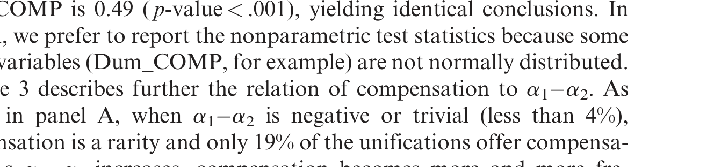
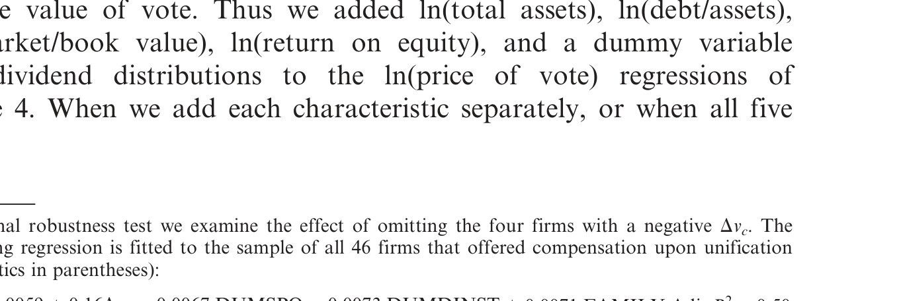
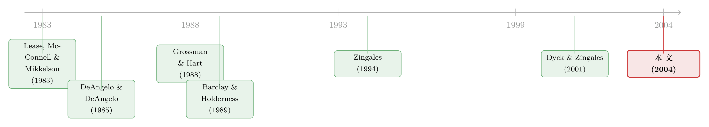

投票权到底值多少钱？——一场「自己卖给自己」的股权统一实验
本文读的是 Hauser & Lauterbach (2004, Review of Financial Studies)：他们用以色列特拉维夫交易所 84 起「双层股权统一 (dual-class stock unification)」，把「一票之值」从交易里直接读了出来——价格大约是 每 1% 投票权值 0.2% 的公司权益；而真正决定这个价格的，不是「优先投票股」这一类股东，而是牢牢握着控制权的大股东自己。
1 一个老问题，和一把新尺子
投票权值多少钱？
这是一个听起来有点奇怪、却纠缠了金融学几十年的问题。一股普通股，除了分红，还附带一份「投票」的权利。理论上，这份权利是有价的——在控制权争夺战里它可能成为关键的一票，掌握控制权的人还能凭它榨取「控制权私利 (private benefits of control)」。可问题是，投票权从来不单独交易，它总是和现金流权捆在一张股票上卖。我们怎么把那部分专属于「投票」的价格，从股价里干净地剥出来？
过去，人们主要靠两条路。
第一条，是看双层股权里优先投票股相对劣后投票股的价格溢价 (price premium)。同样分红、只是投票权不同的两类股票，价差就是投票权的「外部价格」。美国大约 5%–10% [Lease, McConnell, and Mikkelson (1983)]，意大利高到 82% [Zingales (1994)]，典型值落在 10%–20%。
第二条，是看大宗股权交易 (block trade)。Barclay and Holderness (1989) 发现，转移控制权的大宗交易往往溢价成交，溢出来的那块，就是控制权（连带投票权）的内部价值。
这两条路各有各的毛病：价格溢价反映的是一个站在外面的小股东的视角，他在乎的是「这一票会不会成为关键一票」；大宗交易反映的是控制权易主那一刻的价值，是个很大的、不连续的跳变。它们一个太「外」，一个太「猛」。有没有一种交易，恰好是公司内部、在现有股东之间、为了投票权本身而发生的、相对「纯粹」的买卖？
作者找到了。
2 「股权统一」：一笔把投票权卖给自己人的交易
故事发生在以色列。1989 年底，特拉维夫交易所 (Tel Aviv Stock Exchange, TASE) 大约 40% 的上市公司是双层股权：优先投票股一律「一股一票」，劣后投票股则通常是「五股一票」（即 g = 5），两类股票每股分红完全相同。大股东靠优先投票股，用很少的钱就攥住了多数投票权。
1989 年 10 月，TASE 和以色列证券监管局 (ISA) 联手禁止再发行劣后投票股——想融资，只能发「一股一票」的股票。于是从 1990 年起，80 多家公司陆续把双层股权「统一 (unify)」成单一股权。
统一的机制很巧妙。既然优先投票股本就是「一股一票」，统一其实就是把劣后投票股升格成「一股一票」。每一股劣后股白白多得了投票权——这对劣后股东是天上掉馅饼。问题来了：优先投票股东（尤其是大股东）的相对投票权被稀释了，凭什么答应？
于是出现了补偿 (compensation)：公司向优先投票股东免费增发一批「一股一票」的新股，作为他们让出优先地位的对价。
这就是关键。一次「带补偿的统一」，本质上就是一笔公司内部、用额外股份交换投票权的交易：劣后股东（连同公司）付出股份，优先/大股东收下股份、交出投票权优势。它没有控制权易主的剧烈跳变，也不只是市场上一个旁观者的报价——它是当事人关起门来谈出来的「一票之价」。这正是作者要的那把新尺子。
一个数字感：假设某公司有 2 股优先股（大股东持有）和 5 股劣后股（公众持有）。统一前大股东投票权 = 2/(2+5/5) = 2/3，权益 = 2/7。若零补偿，统一后投票权掉到 2/7，权益仍是 2/7。若大股东额外免费拿到 1 股补偿，投票权 = 3/8，权益从 2/7 升到 3/8——他用一点投票权，换回了一点权益。
3 把「一票之价」写成公式
要从交易里读价格，先得把价格定义清楚。作者给了两个定价公式，一个来自市场，一个来自统一交易。
3.1 市场隐含的投票权价格 MPVR
令 i = 1 为优先投票股、i = 2 为劣后投票股，N_i 是第 i 类股票数量，g 是「一票需要几股劣后股」，P_i 是市价。一个投资者卖出 1 股优先股、买入 1 股劣后股，会同时改变自己的「权益份额」和「投票份额」。把两者相除，就得到市场隐含的投票权价格 (MPVR)：
$$ MPVR=-\frac{\Delta Equity}{\Delta Vote}=-\frac{\left(\dfrac{P_1}{P_2}-1\right)\left(\dfrac{1}{N_1+N_2}\right)}{\left(\dfrac{P_1}{P_2}\dfrac{1}{g}-1\right)\left(\dfrac{1}{N_1+N_2/g}\right)} \tag{1} $$
这个量的单位是「ΔEquity/ΔVote」——在边际上，多控制 1% 的公司投票权，要付出多少百分比的公司权益。妙就妙在，它和统一交易、大宗交易里算出来的价格单位一致，因此可以横向对比。
3.2 大股东视角的投票权价格 PVR_c
接着，一个自然的问题是：站在控制权集团（即大股东，作者称之为 majority holders）的角度，这一票又值多少？再补几个记号：COMP 是作为补偿增发的优先股数量，a_i 是大股东在第 i 类股票中的持股比例，e_c、v_c 分别是大股东在公司权益和投票权中的总份额。大股东视角的投票权价格定义为「权益所得 ÷ 投票权所失」：
把份额展开，就是论文里那串完整的表达式：
$$ PVR_c=\frac{\dfrac{a_1(N_1+COMP)+a_2N_2}{N_1+N_2+COMP}-\dfrac{a_1N_1+a_2N_2}{N_1+N_2}}{\dfrac{a_1N_1+a_2N_2/g}{N_1+N_2/g}-\dfrac{a_1(N_1+COMP)+a_2N_2}{N_1+N_2+COMP}} \tag{2} $$
这里藏着本文最关键的一步。如果你把 a_1 = 1、a_2 = 0 代入——也就是假设「定价者」是只持有优先投票股的那一类股东——可以证明此时 PVR_1 = Δe_1/Δv_1 = PVR_c，价格与从谁的角度看无关。换句话说，单看「带补偿的统一」里成交的价格，你分不清到底是「优先投票股这一类」在卖，还是「大股东」在卖。
要分清这两种视角，得换一个问题来问。
4 反转：到底是谁在定价？
真正把两种假说掰开的，是 Δv_c（大股东投票权的变化）和 Δv_1（优先股这一类股东投票权的变化）性质不同。
考虑一个极端情形：a_1 = a_2，即大股东在优先股和劣后股里持股比例相同。比如他持有 70% 的优先股、也持有 70% 的劣后股，那么不管补不补偿、补多少，他在公司里的投票权和权益份额永远是 70%，Δv_c = 0。这种情况下，大股东毫发无损，他当然偏好「零补偿」——零补偿的统一更快、更便宜、公关上还更好看（公众会觉得大股东「无偿让出了特权」）。
可对只持有优先股的那部分股东来说，零补偿统一是赤裸裸的损失：他们的投票权被稀释，却一分钱补偿都没有。这里就埋着大股东与部分优先股东之间的利益冲突。
于是作者提出可检验的假说：
大股东主导假说：统一的价格不是由「优先投票股这一类股东」决定的，而是由控制权集团（大股东）决定的。统一本质上是「大股东把投票权卖给其余股东」。
这个假说给出一个很硬的预测：补偿出现与否，应该跟着大股东自己的投票权损失走，而不是跟着「优先股这一类」的损失走。具体地，当 a_1 - a_2（大股东在优先股里的份额减去在劣后股里的份额）较大时，零补偿统一会让大股东损失大量投票权，因此补偿更可能出现——预测 a_1 - a_2 与「是否补偿」正相关。
数据漂亮地证实了这一点。先看描述：样本里大股东平均控制 76.0% 的投票权、70.3% 的权益，他们持有 85.9% 的优先股和 62.6% 的劣后股。比较「补偿组」和「不补偿组」，一般的公司特征（规模、杠杆、盈利）都没有显著差别，唯一显著不同的是治理结构：补偿组大股东持有优先股的比例显著更高（90% vs 81%，p = 0.003）、持有劣后股的比例显著更低（56% vs 70%，p = 0.007），a_1 - a_2 的差距是 34% vs 11%（p = 0.001），大股东的投票权损失是 7.4% vs 2.0%（p = 0.001）。a_1 - a_2 与补偿哑变量的 Spearman 相关系数为 0.49（p < 0.001）。
然后是这篇论文我最喜欢的一张表。把样本按三种「投票权损失」分组，看补偿比例：

Table 3: describes further the relation of compensation to a (cid:1)a . As
- Panel A（按
a_1 - a_2分组）：从「≤0.04」到「>0.4」，补偿比例从 19% → 43% → 81% → 76%，单调上升，卡方 21.7（p = 0.001）。 - Panel B（按大股东投票权损失
Δv_c分组）：33% → 38% → 71% → 76%，同样单调，Spearman 0.50（p < 0.001）。 - Panel C（按优先股这一类的投票权损失
Δv_1分组）：57% → 86% → 57% → 19%——非单调，而且整体是负相关，Spearman −0.24（p = 0.02）。
于是反转出现了。补偿紧跟着大股东自己的损失（Panel A、B），却反向于「优先股这一类」的损失（Panel C）。如果统一真是「优先投票股作为一类在卖投票权」，那么 Δv_1 越大补偿就该越多——可数据说不是。是大股东在定价。
5 几个让人意外的事实
把这把尺子用到底，作者读出了一串结果。
其一，价格本身。 全样本里，46 家（55%）给了补偿，38 家（45%）没给。优先股东平均投票权下降 25.6%，平均补偿为账面权益的 2.25%，相除得到 PVR ≈ 0.09（直接逐笔估计也是 0.09）。但「不补偿」的统一很可能另有动机（图快、图公关），真正的投票权交易发生在带补偿的样本里：那里平均补偿 4.12%、平均投票权损失 23.7%，PVR ≈ 0.17，中位数 0.12，四分位区间 0.03–0.24，最高 0.86。作者最终给出的「公允估计」是大约 0.2% 权益 / 1% 投票权。
其二，控制权不丢，照样要补偿。 一个直觉是：既然样本里几乎所有大股东统一后仍然控股，私利照拿，那就不该有补偿。但数据里偏偏有补偿。作者给的解释很有意思：统一缩小了大股东的投票权，缩短了他们「说了算」的预期年限——下一次公开增发就可能让他们失去多数地位，于是控制权私利的现值下降，需要补偿。这反过来支持两个命题：(1) 投票权在 50% 这条线之外对大股东仍然有价值；(2) 控制权私利的现值随掌握的投票权单调递增。
其三，内部价格和外部价格，竟然对得上。 在 53 家两类股票都活跃交易、能算出 MPVR 的公司里，市场隐含的投票权价格均值 0.20，明显高于统一价格均值 0.10，但两者相关系数高达 0.51（p = 0.0003）。更妙的是，一旦只看带补偿（即真正讨价还价过）的子样本，二者几乎重合：MPVR 均值 0.34（中位 0.20），统一 PVR 均值 0.25（中位 0.21），差异不显著（t = 1.0）。换句话说，关起门谈出来的价，和市场上挂出来的价，是同一个价。
至于哪些因素抬高或压低了这个价格，作者做了横截面回归——投票权损失越大、家族控制的公司，价格越高；机构投资者持股越多，价格越低（机构正是统一谈判里那些「找麻烦」、逼着公司砍补偿的人）。

Table 4: When we add each characteristic separately, or when all five
6 文献脉络
把这篇论文放回它所在的那条河里，能看得更清楚。
最早，人们从双层股权的价格溢价入手量投票权：Lease, McConnell, and Mikkelson (1983) 给出美国的「控制权市场价值」，Zingales (1994) 用米兰交易所量出了惊人的 82% 溢价。理论一侧，Grossman and Hart (1988) 与 Harris and Raviv (1988) 用「一股一票」之争奠定了为什么投票权结构会影响控制权市场的分析框架；DeAngelo and DeAngelo (1985) 则刻画了管理层如何借双层股权以小博大。
接着，研究转向控制权私利的直接度量：Barclay and Holderness (1989) 用大宗交易溢价估出「内部人」眼中投票权的价值，Zingales (1995) 进一步追问究竟是什么决定了投票权之值，Dyck and Zingales (2001) 把这套度量推到了跨国比较——他们的表 2 把以色列放在控制权私利「最高四分位」的边缘，这也解释了为什么本文 0.2 的估计偏高于成熟经济体。Amoako-Adu and Smith (2001) 注意到了「统一」这一现象，但关注的是统一的原因（两类股东的纷争），而没有从统一的条款里去读价格。

本文正好补上这一格：它是第一个把统一的补偿条款本身当作数据、从中反推投票权价格的研究，并且用「谁在定价」这一问题，把视角从「股东类别」切换到「控制权集团」。（关于从一笔股权交易里把控制权私利「砍价」出来，可参见《控制权的私利，到底值多少钱？》；关于大股东在弱法律环境下能拿走多少，可参见《拍卖桌上量出来的「掏空」》；而双层股权这一制度近年的卷土重来，则见《founders 把控制权写进了招股书》。）
7 评论与延伸（Q&A + 研究方向）
(a) 几个可能的疑问
Q：统一价格只有 0.10，市场价格却有 0.20，这难道不说明两把尺子并不一致吗？
全样本看确实有差，但差主要来自「零补偿」的统一——那些公司往往是为了图快、图公关而无偿统一，并非真在交易投票权。一旦只看真正讨价还价过的「带补偿」样本，统一价格 0.25 与市场价格 0.34 在统计上无法区分（t = 1.0），相关系数 0.51。所以更准确的说法是：当统一真的是一笔交易时，内外价格一致。
Q：样本会不会有选择偏误，导致价格被低估？
作者自己也担心。可能是「投票权值钱的公司」迟迟不统一、留在样本外，于是样本里低价值的公司偏多，价格被低估。但他指出还有一个反向偏误：TASE 只有约 40% 公司是双层股权，如果这些公司本就私利更高、投票权更值钱，那么「只看双层股权」会把价格高估。两个方向的偏误同时存在，净效应不明朗。
Q：大股东统一后还控股，为什么还需要补偿？这不矛盾吗？
不矛盾。作者的解释是：投票权减少缩短了控制权的预期持续时间——下一次增发就可能跌破多数线。所以补偿付的不是「现在丢掉的控制权」，而是「未来更早丢掉控制权」导致的私利现值损失。这也意味着投票权在 50% 之外仍有边际价值。
Q：Panel C 的非单调，到底关键在哪？
它是区分两种假说的「判别式」。若统一是「优先股这一类」在卖票，补偿就该随这一类的投票权损失
Δv_1单调上升；但数据里补偿随Δv_1反而下降（Spearman −0.24）。相反，补偿随大股东自己的损失Δv_c、以及a_1 − a_2单调上升。一升一降，把「大股东主导」从「股东类别主导」里干净地分了出来。
Q：机构投资者在这里扮演什么角色？
机构是统一谈判里的「麻烦制造者」。带补偿的统一需要 ISA 批准和 75%（含劣后股东单独开会）的超级多数，机构（主要是共同基金）常常反对、逼公司砍补偿——Supersol 一案里补偿就从专家建议的 15% 一路被压到 9.75%。结果是：机构持股越多的公司，统一价格越低。
Q：以色列的 0.2 能外推到别的市场吗？
要小心。Dyck and Zingales (2001) 把以色列列在控制权私利的最高四分位边缘，意味着成熟经济体的投票权价格通常更低。这个量级是制度依赖的，不宜直接搬到美国或西欧。
(b) 几个可能的研究问题与提案
1. 把「统一定价法」搬到债权人身上。 【经济故事】统一改变了大股东的投票权与预期控制年限，这对债权人意味着什么？控制权更短的预期、私利现值的下降，可能反而降低了掏空风险、压低信用利差。【可行性】中。需要统一前后的债券/银行贷款利差数据，识别上可用统一事件做事件研究，难点在于以色列公司债市场样本小、需要拼接贷款数据。
2. 外资持有人如何改变投票权的价格。 【经济故事】机构持股压低了统一价格；那么外资机构呢？外资可能更在意治理、更会「找麻烦」，也可能因信息劣势而被动。把投票权价格对外资持股比例做横截面回归，能检验外资是治理改善者还是旁观者。【可行性】中。需要按投资者国籍拆分的持股数据（TASE 的 interested-parties 披露 + 跨境持股库），识别可借助指数纳入带来的外资被动流入做工具变量。
3. 「控制权到期日」的资产定价含义。 【经济故事】本文提出补偿补的是「控制权预期年限缩短」。这等于说控制权像一份有「到期日」的期权。能否把控制权私利建成一个带随机到期的实物期权，用统一、增发、并购等事件来标定其衰减速度？【可行性】中偏低。理论建模可行，但实证标定需要清楚观测到每次控制权稀释事件及其私利变化，数据要求高。
4. 统一对劣后股流动性的影响。 【经济故事】统一让劣后股升格为「一股一票」，理论上消除了类别分割、可能改善流动性；但补偿增发又稀释了股本。净效应是流动性变好还是变差？【可行性】高。TASE 有日度价量数据，统一日期清晰，可直接做围绕统一的流动性（Amihud 非流动性、价差）事件研究。这是最 doable 的一个。
8 我的判断
这篇论文的贡献，不在于又报告了一个「投票权值 0.2」的数字，而在于它找到了一类罕见而干净的交易——公司内部、为投票权本身而发生的、可观测条款的统一——并用「谁在定价」这一问句，把控制权集团的视角从「股东类别」的视角里分离了出来。Panel C 那个反向的相关系数，是整篇文章的「判别式」，干净、可信、说服力强。它还顺手做了一件少有人做成的事：证明了内部谈判价与外部市场价在边际上是一致的。
对识别的担忧有两点。其一，样本选择是双刃的——延迟统一的公司、以及「只有双层股权公司进样本」这两个偏误方向相反，作者诚实地承认无法判定净效应，因此那个 0.2 的点估计应被当作一个区间的中心而非精确值。其二，「补偿补的是未来控制权年限缩短」这个机制虽然自洽，却是间接推断——文中并没有直接观测到大股东事后真的更早失去了控制权，这一环更像是为「即便不丢控制权也补偿」这一事实找的解释，而非被独立验证的因果。
后续我最想看到的，是把这套「内部交易定价」搬到信用市场和外资持有人上：投票权重排不只动了股东之间的蛋糕，也动了债权人脚下的地。当大股东的控制权预期年限被一次统一悄悄缩短，债券的价格会不会先于股票，替我们把这件事记下来？
参考文献
Amoako-Adu, B., and B. Smith (2001). Dual Class Firms: Capitalization, Ownership Structure and Recapitalization Back into Single Class. Journal of Banking and Finance 25, 1083–1111.
Barclay, M., and C. Holderness (1989). Private Benefits From Control of Public Corporations. Journal of Financial Economics 25, 371–395.
Bergstrom, C., and K. Rydqvist (1990). Ownership of Equity in Dual Class Firms. Journal of Banking and Finance 14, 237–253.
DeAngelo, H., and L. DeAngelo (1985). Managerial Ownership of Voting Rights: A Study of Public Corporations With Dual Classes of Common Stock. Journal of Financial Economics 14, 33–69.
Dyck, A., and L. Zingales (2001). Why Are Private Benefits of Control so Large in Certain Countries and What Effect Does This Have on Their Financial Development? Working paper, University of Chicago.
Grossman, S., and O. Hart (1988). One Share/One Vote and the Market for Corporate Control. Journal of Financial Economics 20, 175–202.
Harris, M., and A. Raviv (1988). Corporate Governance: Voting Rights and Majority Rules. Journal of Financial Economics 20, 203–235.
Hauser, S., and B. Lauterbach (2004). The Value of Voting Rights to Majority Shareholders: Evidence from Dual-Class Stock Unifications. Review of Financial Studies 17(4), 1167–1184.
Lease, R., J. McConnell, and W. Mikkelson (1983). The Market Value of Control in Publicly Traded Corporations. Journal of Financial Economics 11, 439–471.
Zingales, L. (1994). The Value of the Voting Right: A Study of the Milan Stock Exchange Experience. Review of Financial Studies 7, 125–148.
Zingales, L. (1995). What Determines the Value of Corporate Votes? Quarterly Journal of Economics 110, 1047–1073.